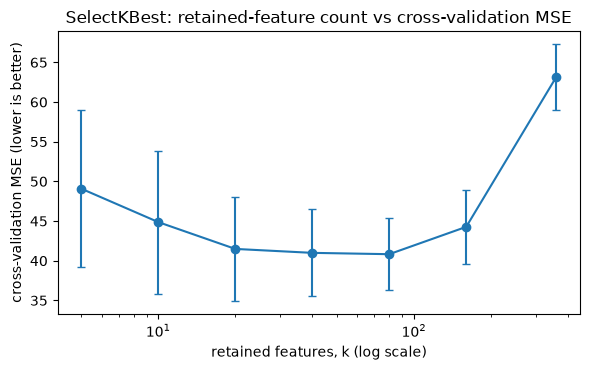
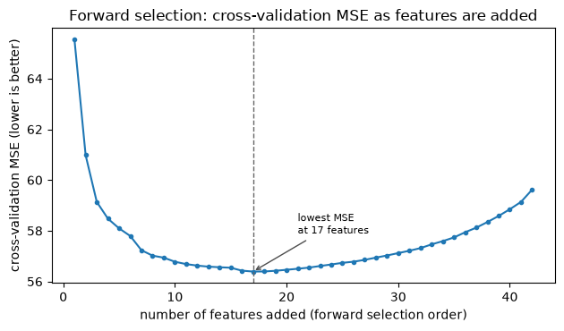

Exercise 5: Regularization and Feature Selection#
Run or download this notebook
This page is fully readable as it is, and the interactive activities work here in the browser. To run or change the Python code, use the portable version of the notebook:
View or download the portable
.ipynbfor VS Code or Jupyter
The portable notebook keeps every Python analysis cell and swaps each embedded activity for a link back to this page.
What this notebook covers#
This is Exercise 5 of Machine Learning for Neuroscience. Exercise 5 examines how we decide which predictors to include in a model. We will compare predefined and data-driven feature selection, use Ridge and Lasso regression, and introduce stepwise selection.
In this notebook you will:
distinguish predefined feature selection from data-driven feature selection;
compare feature sets chosen from prior anatomical knowledge;
select features using training-data correlations, inside a leakage-safe pipeline;
examine how Ridge and Lasso change model coefficients;
explore regularization strength interactively;
tune regularization inside a complete nested cross-validation pipeline;
introduce stepwise feature selection;
reflect on how to choose a feature-selection method.
Prerequisites: Exercise 2’s regression material and Exercise 4’s
validation and cross-validation material; comfort with pandas, numpy,
and the scikit-learn fit / predict / Pipeline pattern.
1. Why Select Features?#
Exercise 2 and Exercise 4 used every one of the 360 cortical-thickness predictors, fixed in advance, to predict age from brain structure. More predictors may provide more information, but they can also add noise, redundancy, and opportunities to overfit. This notebook asks a question those two notebooks set aside: how do we decide which predictors to include?
Predefined selection#
Features chosen using:
anatomical hypotheses;
prior literature;
measurement type;
a research question defined before examining the target data.
Data-driven selection#
Features chosen using:
correlation with the target;
improvement in predictive performance;
model-based coefficient shrinkage.
Predefined feature selection can happen before splitting the data into training and test sets when it is genuinely independent of the current target data – it comes from anatomy or prior literature, not from looking at this cohort’s ages. Data-driven, target-informed selection is different: it must be done using training data only. Selecting features by consulting all participants – including the ones later used for testing – before validation is data leakage: the test set would no longer measure performance on unseen participants, because it had already influenced which predictors the model was allowed to see.
Think first
Is a feature included because it is biologically plausible, predictive, or both?
Does a strong individual correlation guarantee that a feature improves a multivariable model?
Can several brain measurements contain mostly overlapping information?
What happens if the test participants influence feature selection?
This notebook reuses Exercise 2 and Exercise 4’s exact ABIDE-II data table, target, feature recipe, and fixed train/test split – nothing about the data or the split changes here.
data table: 1004 participants x 1446 columns
# The same fixed 360 cortical-thickness predictors, and the same fixed,
# stratified train/test split, used throughout Exercises 2 and 4.
FEATURES = [c for c in BRAIN_COLS if c.startswith("fsCT_")]
assert all(c.startswith("fsCT_") for c in FEATURES) # brain-only
assert "age" not in FEATURES # no target leakage
has_age = model_df["age"].notna()
X = model_df.loc[has_age, FEATURES].to_numpy(float)
y = model_df.loc[has_age, "age"].to_numpy(float)
groups = model_df.loc[has_age, "group"].to_numpy() # 1 = autism, 2 = control
X_train, X_test, y_train, y_test, groups_train, groups_test = train_test_split(
X, y, groups, test_size=0.25, random_state=42, stratify=groups
)
print(f"{len(FEATURES)} predictors, e.g. {FEATURES[:3]}")
print(f"n_train = {len(y_train)} n_test = {len(y_test)} n_features = {X.shape[1]}")
360 predictors, e.g. ['fsCT_L_V1_ROI', 'fsCT_L_MST_ROI', 'fsCT_L_V6_ROI']
n_train = 753 n_test = 251 n_features = 360
2. Compare Predefined Feature Sets#
Prior knowledge can define a feature set before model fitting. Here, we compare feature groups based on anatomical regions and measurement types.
Cortical structure changes with age across most of the brain, not in one circumscribed system: large multi-site lifespan mapping (Bethlehem et al., 2022, doi:10.1038/s41586-022-04554-y) and longitudinal work on adult cortical change (Storsve et al., 2014, doi:10.1523/JNEUROSCI.0391-14.2014) both describe widespread, region-varying change with age rather than change confined to a small set of regions. So there is no single small region set this exercise’s own age literature prefers; the bundles below are used here simply as several differently sized, differently located anatomical comparisons, each chosen before looking at how well it predicts age in this cohort.
The activity compares two models at a time on one fixed cohort and one fixed evaluation procedure, so any difference is a real difference between feature sets. It shows out-of-sample scores only – never training scores.
Think first
Hold the ROI bundle fixed and change only the measurement type; then hold the measurement fixed and change only the bundle. Which control moves R² more?
Set one model to
All eligible ROIs. What happens to the feature count and to R², and why – and is that the same direction of change you would expect for a target with a much weaker brain-based signal than age?Find the single best-scoring configuration you can. Would you trust its R² as your final reported number? Why or why not?
Trying several feature sets on the same evaluation data is exploratory comparison. If we choose the best-looking set, that choice must be included inside a new validation procedure before reporting final performance.
The frontal cortical-thickness set may predict age reasonably well – but are all of these features useful for prediction? Perhaps a smaller subset carries most of the signal while the remaining features add noise. The rest of this notebook asks that question directly.
3. Select Features Using the Data#
Instead of choosing a feature set from prior knowledge, we can rank features by how strongly each one, on its own, relates to age – and use that ranking to select a subset. This section shows two stages: an intuitive first look, and then the leakage-safe pipeline version that actually belongs inside a validation procedure.
An intuitive first look: correlation with age#
The cell below computes each of the 360 cortical-thickness features’ Pearson correlation with age, using the training participants only – the 251 test participants are never read here.
corrs = np.array([np.corrcoef(X_train[:, j], y_train)[0, 1] for j in range(X_train.shape[1])])
order = np.argsort(corrs)
print(f"correlation range across all {len(FEATURES)} features: [{corrs.min():+.3f}, {corrs.max():+.3f}]")
print("\n5 most negatively correlated with age (thinner with older age):")
for j in order[:5]:
print(f" {FEATURES[j]:20s} r = {corrs[j]:+.3f}")
print("\n5 with the weakest correlation with age (near zero):")
for j in np.argsort(np.abs(corrs))[:5]:
print(f" {FEATURES[j]:20s} r = {corrs[j]:+.3f}")
print("\n5 least negative (closest to a positive relationship with age):")
for j in order[::-1][:5]:
print(f" {FEATURES[j]:20s} r = {corrs[j]:+.3f}")
correlation range across all 360 features: [-0.563, +0.087]
5 most negatively correlated with age (thinner with older age):
fsCT_L_5mv_ROI r = -0.563
fsCT_L_DVT_ROI r = -0.557
fsCT_R_V2_ROI r = -0.544
fsCT_L_MBelt_ROI r = -0.538
fsCT_R_23c_ROI r = -0.532
5 with the weakest correlation with age (near zero):
fsCT_L_TGd_ROI r = -0.001
fsCT_R_H_ROI r = -0.002
fsCT_R_PreS_ROI r = -0.005
fsCT_R_AAIC_ROI r = +0.006
fsCT_L_PeEc_ROI r = -0.006
5 least negative (closest to a positive relationship with age):
fsCT_R_Pir_ROI r = +0.087
fsCT_R_TGv_ROI r = +0.052
fsCT_L_EC_ROI r = +0.050
fsCT_R_TGd_ROI r = +0.031
fsCT_R_PeEc_ROI r = +0.028
Almost every cortical-thickness feature correlates negatively with age here – consistent with the widespread cortical thinning described in the lifespan-mapping literature cited above – with a range from a moderate negative correlation down to essentially zero. None reaches a strong positive correlation in this cohort. A correlation this size, on its own, does not say whether a feature adds anything once other correlated predictors are already in the model: many of these 360 columns are themselves correlated with each other, since neighbouring cortical regions tend to thin together.
A leakage-safe pipeline: SelectKBest inside cross-validation#
Ranking every feature on the full training set once, then reusing that same
ranking for every cross-validation fold, would let each fold’s training
score benefit from information in the rows that fold was supposed to leave
out for validation. A feature selector, like any other model-fitting
step, must be recalculated separately inside each training fold. scikit-learn’s
SelectKBest(score_func=f_regression) ranks features by their relationship
with the target and keeps the k best; placed inside a Pipeline, it is
refit on each fold’s training rows only, exactly like StandardScaler.
The cell below compares candidate retained-feature counts
5, 10, 20, 40, 80, 160, all (360) with 5-fold cross-validation on the
outer-training partition. The outer test set is not read anywhere in this
cell.
K_GRID = [5, 10, 20, 40, 80, 160, 360]
select_pipe = Pipeline([
("scaler", StandardScaler()),
("select", SelectKBest(score_func=f_regression)),
("lr", LinearRegression()),
])
select_cv = KFold(n_splits=5, shuffle=True, random_state=0)
select_grid = GridSearchCV(
select_pipe, {"select__k": K_GRID}, scoring="neg_mean_squared_error", cv=select_cv, n_jobs=-1
)
select_grid.fit(X_train, y_train)
select_results = pd.DataFrame({
"k": K_GRID,
"cv_mse": -select_grid.cv_results_["mean_test_score"],
"cv_mse_std": select_grid.cv_results_["std_test_score"],
})
print(f"best k by cross-validation: {select_grid.best_params_['select__k']}")
select_results.round(2)
best k by cross-validation: 80
| k | cv_mse | cv_mse_std | |
|---|---|---|---|
| 0 | 5 | 49.08 | 9.88 |
| 1 | 10 | 44.87 | 9.01 |
| 2 | 20 | 41.49 | 6.59 |
| 3 | 40 | 40.99 | 5.50 |
| 4 | 80 | 40.83 | 4.57 |
| 5 | 160 | 44.27 | 4.70 |
| 6 | 360 | 63.15 | 4.14 |
fig, ax = plt.subplots(figsize=(6, 3.8))
ax.errorbar(select_results["k"], select_results["cv_mse"], yerr=select_results["cv_mse_std"],
marker="o", capsize=3)
ax.set_xscale("log")
ax.set_xlabel("retained features, k (log scale)")
ax.set_ylabel("cross-validation MSE (lower is better)")
ax.set_title("SelectKBest: retained-feature count vs cross-validation MSE")
plt.tight_layout(); plt.show()

Cross-validation MSE improves as k grows from 5 up to roughly the low
hundreds, then gets worse again by k = 360 (every feature) – selecting more
features does not always improve validation performance. Somewhere in the
middle, the selected features carry most of the usable signal; beyond that
point, additional features mostly add redundancy and noise for this model and
this cross-validation split.
Think first
Why must target correlations be recalculated in each training fold?
Can a feature with weak individual correlation still help a multivariable model?
Does selecting more features always improve validation performance?
Why can two correlated predictors provide redundant information?
4. Ridge and Lasso Regression#
Ordinary linear regression (Exercise 2) chooses coefficients \(\beta_1, \ldots, \beta_p\) to minimize the sum of squared errors (SSE) between predicted and observed age, with no penalty on the coefficients’ size. Regularization adds a penalty on the size of the coefficients to that fitting objective, so the model is rewarded for fitting the data well and for keeping coefficients small.
Ridge regression penalizes the sum of squared coefficients:
Lasso regression penalizes the sum of absolute coefficients:
Model |
What happens to coefficients? |
Selects features? |
|---|---|---|
Linear regression |
No shrinkage |
No |
Ridge |
Coefficients shrink toward zero |
Usually no |
Lasso |
Some coefficients become exactly zero |
Yes |
Ridge is regularization, not usually feature selection: it shrinks every coefficient toward zero but rarely sets one to exactly zero, so it keeps using (a shrunk version of) every predictor. Lasso is regularization and embedded feature selection: its penalty can drive individual coefficients to exactly zero, dropping those predictors from the fitted model entirely.
\(\alpha\) (alpha) controls the penalty’s strength for either model. A very
small \(\alpha\) makes the penalty negligible, so the fit approaches ordinary
linear regression; a very large \(\alpha\) can push coefficients so close to
zero that the model badly underfits, predicting close to the same value for
everyone regardless of their brain measurements. Because the penalty is
applied to the coefficients’ raw size, predictors must be put on the same
scale – standardized, as StandardScaler already does throughout this
course – before that penalty can compare and shrink them fairly; an
unstandardized predictor with large numeric values would otherwise be
penalized differently just because of its units.
As in Exercise 2’s bias-variance discussion: less flexibility (a larger \(\alpha\)) tends to raise bias and lower variance, and more flexibility (a smaller \(\alpha\), closer to unregularized linear regression) tends to lower bias and raise variance. Exercise 4’s validation tools – training vs. validation curves, and nested cross-validation – are exactly what is needed to choose \(\alpha\) well; this notebook does not reteach them from scratch.
A concrete illustration uses the same idea as Exercise 4’s tuning section: a further split of the training partition into a fitting subset and a validation subset (identical split to Exercise 4’s own tune-without-touching-test step), so we can watch training and validation error separately while trying a few fixed \(\alpha\) values, before the interactive activity below explores a full range.
n_fit = 564 n_val = 189 (from the 753-row outer-training partition only)
# Three fixed, illustrative configurations -- not yet tuned. StandardScaler
# is fit on the fitting subset only, then applied to both subsets.
scaler = StandardScaler().fit(X_fit)
Xf, Xv = scaler.transform(X_fit), scaler.transform(X_val)
illustration_rows = []
for name, model in [
("Linear regression", LinearRegression()),
("Ridge (alpha = 1)", Ridge(alpha=1.0)),
("Lasso (alpha = 0.1)", Lasso(alpha=0.1, max_iter=20000)),
]:
model.fit(Xf, y_fit)
train_mse = mean_squared_error(y_fit, model.predict(Xf))
val_mse = mean_squared_error(y_val, model.predict(Xv))
nnz = int(np.sum(np.abs(model.coef_) > 1e-10))
norm = float(np.linalg.norm(model.coef_))
illustration_rows.append({"model": name, "train_mse": train_mse, "val_mse": val_mse,
"nonzero_coefficients": nnz, "coefficient_norm": norm})
pd.DataFrame(illustration_rows).round(2)
| model | train_mse | val_mse | nonzero_coefficients | coefficient_norm | |
|---|---|---|---|---|---|
| 0 | Linear regression | 10.34 | 76.12 | 360 | 12.83 |
| 1 | Ridge (alpha = 1) | 10.35 | 72.04 | 360 | 12.36 |
| 2 | Lasso (alpha = 0.1) | 18.64 | 25.39 | 177 | 5.04 |
Even at these fixed, unturned \(\alpha\) values, the pattern from the table above already shows up: Ridge’s coefficient count stays at all 360 predictors while its coefficient norm shrinks relative to unregularized linear regression; Lasso’s coefficient count drops well below 360 – some coefficients have become exactly zero. Whether these particular \(\alpha\) values are good choices is exactly what tuning, not guessing, should decide – which is what the rest of this section does.
Think first
What should happen to coefficient magnitudes as alpha increases?
Which method can produce exactly zero coefficients?
Which model should have the lowest training error?
Does the lowest training error imply the best validation performance?
What happens to predictions when regularization becomes extremely strong?
5. Explore Regularization#
The activity below, “Shrink the coefficients”, lets you choose Linear Regression, Ridge, or Lasso and move alpha on a logarithmic scale, watching predictions, coefficients, and training/validation error update together on the same fitting and validation participants as above. Linear Regression has no alpha – it is shown as the unregularized baseline. Only training and validation numbers are shown; the test set stays locked, exactly as in Exercise 4.
Think first
Which method changes the number of retained features?
Why does Ridge keep many small coefficients?
When does increasing alpha begin to harm validation performance?
Does Lasso retain every anatomically plausible feature?
Does a zero coefficient prove biological irrelevance?
Which curve should determine alpha: training or validation?
Optional: Reproduce the Activity in Python#
The interactive activity above contains the main lesson. Expand this optional section if you want to reproduce the alpha curves in Python.
6. A Complete Regularized Regression Pipeline#
Sections 4-5 tuned alpha with one fitting/validation split. As in Exercise 4, a single split spends participants on fixed roles and reports only one evaluation. This section uses the same nested cross-validation workflow Exercise 4 introduced – an inner loop tunes alpha, an outer loop evaluates the complete tuning procedure – applied here to compare three models:
Linear Regression;
Ridge, with alpha tuned by the inner loop;
Lasso, with alpha tuned by the inner loop.
All three use identical outer folds, so the comparison is fair, and each
uses StandardScaler inside its own pipeline, fit on each fold’s training
rows only. Alpha is tuned by an inner GridSearchCV (scored by MSE) on each
outer fold’s training data; the outer folds then evaluate the whole
procedure – tuning included – and report MSE and \(R^2\) on data neither the
scaler, nor alpha, ever saw. This runs on the full eligible cohort (1004
participants), not only the earlier training partition.
summary = (
pipeline_results.groupby("model")
.agg(mean_outer_mse=("outer_test_mse", "mean"),
mean_outer_r2=("outer_test_r2", "mean"),
alpha_values=("alpha", lambda s: sorted(set(round(v, 4) for v in s.dropna())) or None),
median_nonzero=("nonzero_coefficients", "median"))
.loc[["Linear Regression", "Ridge", "Lasso"]]
)
summary.round(3)
| mean_outer_mse | mean_outer_r2 | alpha_values | median_nonzero | |
|---|---|---|---|---|
| model | ||||
| Linear Regression | 49.136 | 0.427 | None | NaN |
| Ridge | 31.489 | 0.645 | [316.2278, 562.3413] | 360.0 |
| Lasso | 32.362 | 0.636 | [0.1468, 0.2154] | 118.0 |
The outer results estimate the performance of the complete tuning procedure. The inner score chooses alpha; it is not the final performance estimate. Ridge and Lasso both improve substantially on unregularized linear regression’s outer MSE here: with 360 correlated predictors, even an outer-training partition of roughly 800 participants is not enough for ordinary least squares to generalize well, and shrinking the coefficients helps. Ridge keeps effectively all 360 predictors at every selected alpha; Lasso’s median nonzero-coefficient count is well below 360, embedding real feature selection inside the fit – without a separate selection step.
Lasso’s nonzero coefficients describe the fitted predictive model. They do not establish that the corresponding brain regions cause age-related changes.
The selected alpha values above sit well inside each grid’s range, not at
either boundary, so there was no need to extend RIDGE_ALPHAS or
LASSO_ALPHAS further. As in Exercise 4, different outer folds are free to
select different alpha values – and permitted to agree, too – because each
outer training set contains different participants.
7. Other Feature-Selection Methods#
Correlation ranking (Section 3) and Lasso (Sections 4-6) are two ways to select features. A few other approaches are common enough to know about:
Method |
Main idea |
Main caution |
|---|---|---|
Univariate filtering |
Rank features one at a time |
Ignores combinations among predictors |
Sequential selection |
Add features forward or remove them backward |
Computationally expensive and can overfit selection decisions |
PCA |
Replace features with components |
Feature extraction, not feature selection; covered later |
Stepwise selection refers to sequential procedures like these:
forward selection starts with no features and adds, one at a time, the feature that most improves cross-validated performance;
backward selection starts with all features and removes, one at a time, the least useful feature.
Each decision must use training data only, exactly like the SelectKBest
pipeline in Section 3. Classical stepwise regression, as traditionally
taught with p-value thresholds for adding or removing a predictor, is not the
method demonstrated here – this notebook uses cross-validated performance to
decide, via scikit-learn’s SequentialFeatureSelector.
The cell below demonstrates forward selection on a small, predefined, manageable candidate set – the 42 bilateral prefrontal cortical-thickness features (Section 2’s “Prefrontal only” bundle) – rather than all 360 predictors, so the search stays fast and its result stays readable.
42 predictors: bilateral prefrontal cortical thickness
n_train = 753
stepwise_cv = KFold(n_splits=5, shuffle=True, random_state=0)
sfs = SequentialFeatureSelector(
Pipeline([("scaler", StandardScaler()), ("lr", LinearRegression())]),
n_features_to_select=17, direction="forward",
scoring="neg_mean_squared_error", cv=stepwise_cv, n_jobs=-1,
)
sfs.fit(X_frontal_train, y_frontal_train)
selected = [FEATURES_FRONTAL[i] for i in range(len(FEATURES_FRONTAL)) if sfs.get_support()[i]]
print(f"SequentialFeatureSelector (forward, 17 features): {selected}")
SequentialFeatureSelector (forward, 17 features): ['fsCT_L_a9-46v_ROI', 'fsCT_R_a9-46v_ROI', 'fsCT_R_p9-46v_ROI', 'fsCT_L_9a_ROI', 'fsCT_R_9p_ROI', 'fsCT_L_8C_ROI', 'fsCT_L_8Av_ROI', 'fsCT_L_8Ad_ROI', 'fsCT_L_IFJa_ROI', 'fsCT_L_IFJp_ROI', 'fsCT_R_IFSa_ROI', 'fsCT_R_IFSp_ROI', 'fsCT_R_p47r_ROI', 'fsCT_L_a47r_ROI', 'fsCT_L_p32pr_ROI', 'fsCT_R_p32pr_ROI', 'fsCT_R_8BM_ROI']
SequentialFeatureSelector returns a fixed-size subset. The cell below
performs the same greedy forward procedure step by step – add whichever
remaining feature most improves cross-validated MSE – so we can see the
full curve of cross-validation MSE as features are added, not just one final
subset size.
from sklearn.model_selection import cross_val_score
remaining = list(range(len(FEATURES_FRONTAL)))
order_idx = []
curve_mse = []
for _ in range(len(FEATURES_FRONTAL)):
best_j, best_score = None, -np.inf
for j in remaining:
candidate = order_idx + [j]
pipe = Pipeline([("scaler", StandardScaler()), ("lr", LinearRegression())])
score = cross_val_score(
pipe, X_frontal_train[:, candidate], y_frontal_train,
cv=stepwise_cv, scoring="neg_mean_squared_error", n_jobs=-1,
).mean()
if score > best_score:
best_score, best_j = score, j
order_idx.append(best_j)
remaining.remove(best_j)
curve_mse.append(-best_score)
best_size = int(np.argmin(curve_mse)) + 1
print(f"lowest cross-validation MSE at {best_size} features (MSE = {curve_mse[best_size - 1]:.1f})")
print(f"cross-validation MSE with all {len(FEATURES_FRONTAL)} features = {curve_mse[-1]:.1f}")
lowest cross-validation MSE at 17 features (MSE = 56.4)
cross-validation MSE with all 42 features = 59.6
fig, ax = plt.subplots(figsize=(6.4, 3.8))
ax.plot(range(1, len(curve_mse) + 1), curve_mse, marker=".")
ax.axvline(best_size, color="0.4", ls="--", lw=1)
ax.annotate(f"lowest MSE\nat {best_size} features", xy=(best_size, curve_mse[best_size - 1]),
xytext=(best_size + 4, curve_mse[best_size - 1] + 1.5), fontsize=8,
arrowprops=dict(arrowstyle="->", color="0.3"))
ax.set_xlabel("number of features added (forward selection order)")
ax.set_ylabel("cross-validation MSE (lower is better)")
ax.set_title("Forward selection: cross-validation MSE as features are added")
plt.tight_layout(); plt.show()

Cross-validation MSE falls as the first several features are added, reaches
a minimum, and then rises again as further features mostly add redundancy
rather than new information – the same pattern Section 3’s SelectKBest
curve showed on the full 360-feature recipe. Forward selection is
considerably slower than SelectKBest or Lasso here: it retrains and
cross-validates a growing model at every candidate feature, every step,
compared with one ranking pass or one regularized fit.
Think first
When does adding another feature stop helping?
Can validation performance worsen after adding a feature?
Why is stepwise selection slower than Lasso?
Must the sequential selection itself occur inside cross-validation?
8. How Do We Choose a Feature-Selection Method?#
How do we choose a feature-selection method?
There is no universally best method. The choice depends on the research question, the type and number of predictors, how strongly predictors overlap, whether interpretation or prediction is the main goal, the available sample size, and the computational cost. Features chosen using the target must always be selected within the training data and evaluated on unseen participants.
A few brief considerations:
prior scientific hypothesis – a predefined feature set stays appropriate when a genuine hypothesis, decided before looking at this cohort’s outcomes, motivates it;
prediction versus interpretability – Lasso and stepwise selection produce a small, readable predictor set; Ridge keeps every predictor but can predict just as well or better;
sample size relative to feature count – with few participants relative to predictors, as in this notebook’s 360-feature recipe, regularization or selection matters more, not less;
computational budget and validation design – univariate filtering and Lasso scale easily to hundreds of predictors; stepwise selection does not, and every method still needs a validation procedure like Exercise 4’s to report an honest final performance estimate.
In summary#
Predefined feature selection can use anatomy or prior literature, decided independently of the current target data. Data-driven feature selection must use training data only; consulting test participants while selecting features is data leakage.
Comparing several predefined feature sets on the same evaluation procedure (Section 2) is exploratory model comparison, not a final performance claim, exactly as in Exercise 2’s own feature-set comparison.
Correlation with the target ranks individual features, but a feature selector belongs inside cross-validation, refit on each training fold, exactly like
StandardScaler(Section 3). Selecting more features does not always improve validation performance.Ridge shrinks every coefficient toward zero without usually reaching exactly zero; Lasso can shrink coefficients to exactly zero, embedding feature selection inside the fit. Alpha controls the strength of either penalty, and predictors must be standardized before that penalty is fair (Section 4).
Tuning alpha, or the number of retained features, inside nested cross-validation (Section 6) – as in Exercise 4 – keeps that tuning decision separate from the final performance estimate.
Univariate filtering, sequential (stepwise) selection, and Lasso all select features by different mechanisms and at different computational costs; PCA replaces features with components rather than selecting among them, a feature-extraction idea for a later lesson (Section 7).
No single feature-selection method is always best; the right choice depends on the research question, the predictors, the sample size, and the computational budget.
Next practice: classification with more than two categories.
Questions to take away#
Give one example of a predefined feature-selection decision and one example of a data-driven one.
Why can predefined feature selection sometimes happen before splitting the data, while data-driven selection cannot?
Two feature sets in Section 2’s activity give different R². List three reasons other than “one set is biologically better” that could explain the gap.
Why must a feature selector be refit inside each cross-validation fold rather than fit once on the full training set?
In Section 3, why does cross-validation MSE get worse again at
k = 360?What is the key difference between what Ridge does to coefficients and what Lasso does?
Why must predictors be standardized before comparing Ridge or Lasso coefficients?
In Section 6, why is the inner cross-validation score not reported as the final performance estimate?
Does a Lasso coefficient of exactly zero prove a brain region is unrelated to age? Why or why not?
Why is forward stepwise selection slower than Lasso, even though both can produce a small feature subset?
Name one situation where a predefined feature set would be preferred over a data-driven one, and one where the reverse would be true.